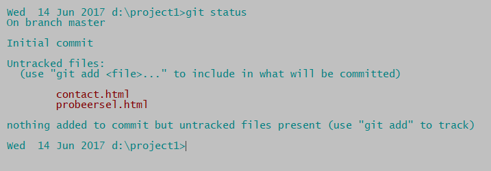
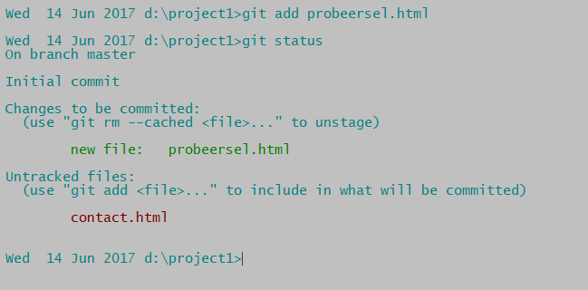
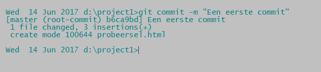

Een project maken
Laten we - in de commandline - een nieuwe directory (map) aanmaken voor ons eerste project:
cd
mkdir tmp
cd tmp
mkdir project1
cd project1Dit kan natuurlijk ook met de verkenner of vanuit een editor
Plaats deze directory onder versie controle:
git initAls je in de bash commandline (linux) intikt
ls -alFdir /ahLaten we het programmeren aan dit project beginnen. Tik het volgende in je programma-editor in:
En sla het op onder de naam probeersel.html. Probeer of het werkt.
Maak op dezelfde manier een contact.html aan met deze inhoud:
Laten we eens kijken wat git denkt dat we aan het doen zijn met een van de commando's die je vaak zult gebruiken:
git status
Uit het screenshot wordt duidelijk dat er nog niets in de repository staat ('initial commit') en dat er twee files 'untracked' zijn. De volgende stap wordt ook aangegeven: git add om de files toe te voegen aan de wachtrij voor de repository.
git add probeersel.htmlGeef weer het commando git status.

Nu rapporeert dit commando dat probeersel.html een "new file to be commited" is. (Een file die 'committed' is hoort officieel bij een project.) Laten we de file 'committen':
git commit -m "Een eerste commit"Achter de -m staat een tekst in "" die de commit beschrijft. Als je de -m en de tekst weglaat zal een teksteditor openen en kun je een lange beschrijving geven als dat nodig is. Op dit moment volstaat die ene samenvattende regel. Dit zie je op het scherm:

Als je nu weer git status ingeeft zul je alleen een melding krijgen over contact.html: "Untracked". Over probeersel.html geen woord. Als git niets over een bestand zegt betekent dit dat het bestand wel wordt bijgehouden, maar dat het sinds de laatste commit niet meer gewijzigd is.
Overigens: het volgende commando voegt in één keer alle bestanden uit de working directory toe aan de wachtrij (let op de punt!!):
git add .Als we dit nu ingeven en we doen meteen de tweede commit dan zijn beide files onder versie controle. Dus in één adem:
git add .
git commit -m "Een tweede commit"
We hebben succesvol ons eerste project onder versie controle geplaatst.